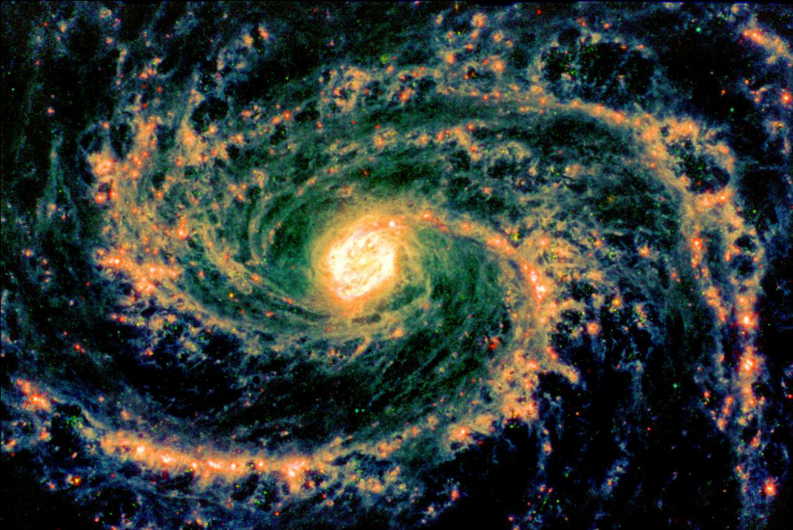
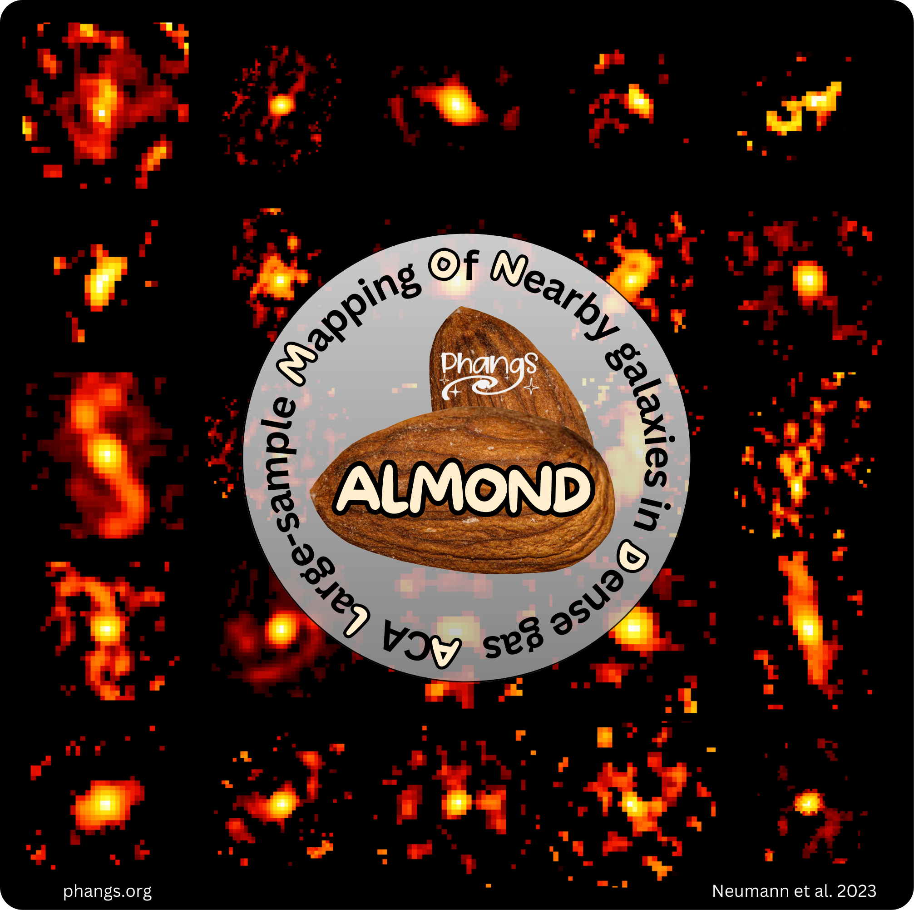
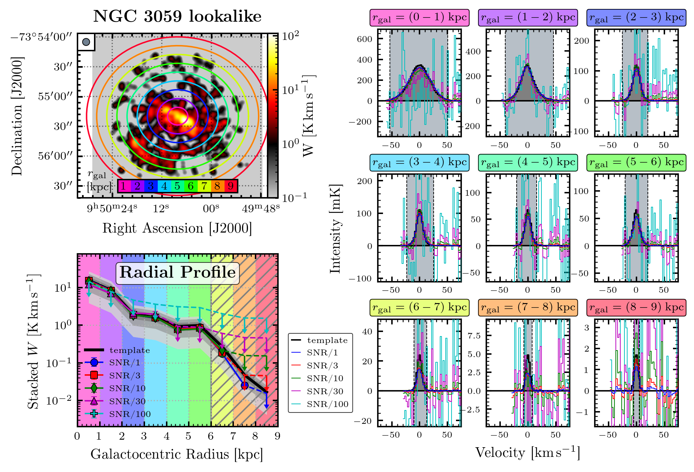
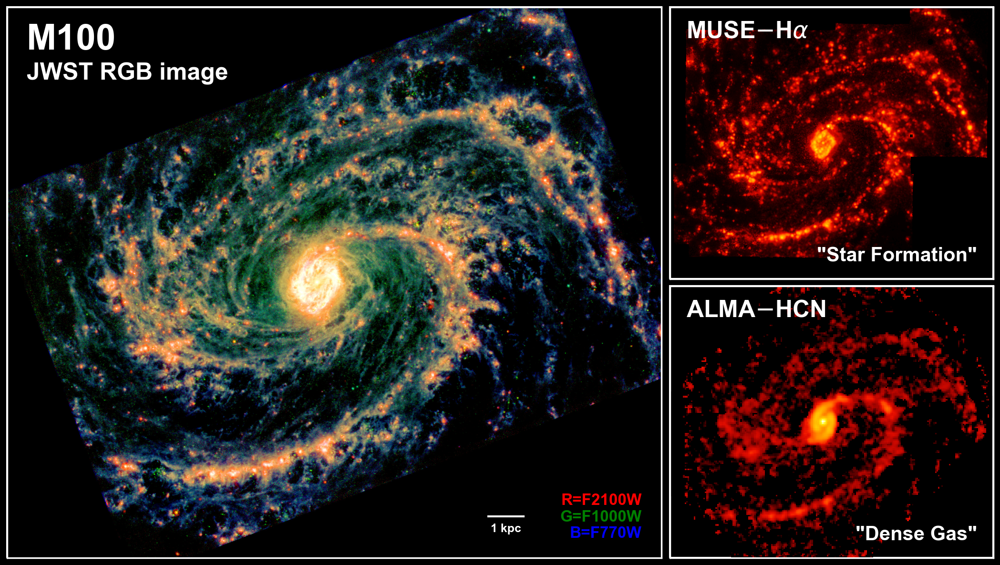
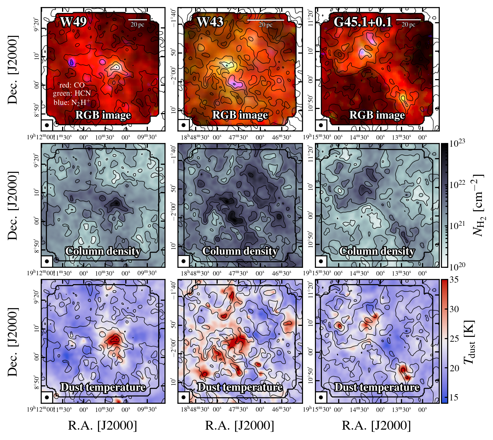

About Me
I am currently a PhD candidate at the Argelander-Institute for Astronomy, Bonn University working with Prof. Dr. Frank Bigiel.
The topic of my PhD thesis is "Connecting probes of molecular gas physics from the Milky Way to nearby Galaxies".
I am a member of the PHANGS and LEGO collaborations.
My research is focused on understanding star formation, one of the most fundamental, yet poorly understand processes in the universe.
In particular, I want to understand how stars form in the densest parts of molecular clouds, the sites of star formation, and how the stars feed back energy into the interstellar medium driving turbulence and regulating star formation.
In my free time, I like to do a lot of sports, including running and CrossFit keeping me active and healthy.
First and foremost, I am a semi-professional athlethe performing Minigolf on the highest possible level in the country and internationally.
I am playing for the German national team and am currently the reigning World Champion.
Moreover, I also love the outdorrs and like to hike and travel, especially by exploring Europe with my camper van.
Education:
PhD Astrophysics, Bonn University, Germany (11/2021-fall/2024)
Master Astrophysic, Bonn University, Germany (04/2019-09/2021)
Master Physics, Bielefeld University, Germany (04/2017-12/2018)
Bachelor Physics, Bielefeld University, Germany (10/2013-01/2017)
Research Interests:
Star Formation, Interstellar Medium, Molecules, Molecular Clouds, Stellar Feedback, Galaxies
Publications: ADS link!
Research

Check out My ADS
and My ORCiD
My research is about star formation, which is at the heart of many astrophysical processes and responsible for the origin of life, i.e. our very own species.
I want to fundamentally understand how stars form from the dense molecular gas and how star formation is interconnected with the matter cylce and evolution in galaxies.
To study the gas and the sites of star formation, we need state-of-the-art observatories across at basically all wavelength.
My research is highly driven by observations across the electromagnetic spectrum using telescopes like GALEX (UV), VLT (optical), JWST (infrared) and ALMA (radio).
Only by combining observations from all of these wavelengths, we get a comprehensive picture of star formation in the universe.
During my PhD, I have studied the dense molecular gas in neartby galaxies and the Milky Way.
With the ALMOND survey, I have studied the largest sample of nearby galaxies mapped in dense gas and connected how star formation occors in the dense gas to the properties of molecular clouds.
I have also worked on advancing technical tools such as the stacking technique and developed a publicly available Python code (PyStacker).
My current works focus on studying a Milky-Way analog, the nearby, spiral galaxy M100 aka NGC 4321, in great details using unmatched high-resolution ALMA data paired with MUSE and JWST observations.
Moreover, inside LEGO, I am investigating the physical conditions of star forming regions in the Milky Way with the goal of connecting to the extragalactic regime.
You can find more details on each of these projects below.
The ALMOND survey: molecular cloud properties and gas density tracers across 25 nearby spiral galaxies with ALMA
(Paper Link)
With the PHANGS collaboration, we mapped 25 nearby, star-forming galaxies in dense gas tracers (HCN, HCO+, CS) with ALMA at 1-2 kpc scales.
Currently, this is the biggest survey of dense gas maps of nearby galaxies.
In addition, it comes with fantastic observation of other state-of-the-art telescopes like GALEX, WISE, MUSE, JWST and HST and with ALMA in CO(2-1) at 100 pc scales
making this a perfect playground to study star formation, dense gas and molecular clouds properties.
In this first study, we addressed the missing link between kpc scale spectroscopy (dense gas, star formation) and molecular cloud properties.
we showed that the star formation efficiency of dense gas is not a universal constant but varies systematically with the properties of molecular clouds
such that more turbulent clouds are less efficiency converting dense gas into stars.
A results also predicted by turbulent cloud models.
Fun fact: "Dense gas smeels like almonds", i.e. hydrogen cyanide (HCN), one of the major molecules observed by this survey smells like almonds.
However, don't eat it, it's toxic, just observe it!

Spectral stacking of radio-interferometric data
(Paper Link)

M100 (work in progress)

LEGO (work in progress)

Contact
Email:
lneumann@astro.uni-bonn.de
Address:
Argelander-Institut für Astronomie
Auf dem Hügel 71, 53121 Bonn, Germany